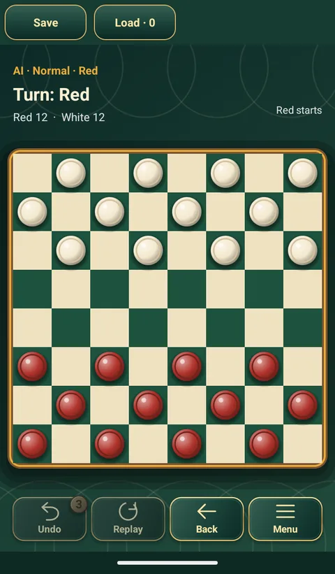

체커
English Draughts · American Checkers
대각선으로 움직이고, 뛰어넘어 잡고, 끝 줄에 닿으면 킹이 되는 8×8 판의 클래식 게임입니다.
체커 하는 법과 규칙
- 목표: 상대 말을 모두 잡거나, 상대가 움직일 수 없게 만듭니다.
- 말은 어두운 칸에서만 움직입니다. 일반 말은 대각선 앞으로 한 칸 갑니다.
- 대각선 앞에 상대 말이 있고 그 뒤가 비어 있으면 뛰어넘어 잡습니다. 잡을 수 있으면 반드시 잡아야 합니다.
- 잡은 뒤 같은 말이 계속 잡을 수 있으면 끝까지 이어서 뛰어야 합니다.
- 상대 끝줄에 도달하면 킹이 되고 그 차례가 끝납니다. 킹은 앞뒤 대각선 한 칸을 이동하거나 인접한 상대 말을 뛰어넘어 잡습니다. 여러 칸을 한 번에 미끄러져 갈 수는 없습니다.
- 이 앱은 8×8 영미식 체커입니다. 여러 포획 경로 중 하나를 고를 수 있으며 가장 많이 잡는 경로를 선택할 필요는 없습니다.
- 이 앱은 같은 차례의 동일 국면이 세 번 나오거나 양쪽이 각각 40수 동안 포획이나 일반 말 이동 없이 두면 자동으로 무승부 처리합니다. 사람 간 대전과 AI 대전 모두 적용됩니다.
이 앱의 체커
- 영미식 체커 규칙.
- 원하는 색을 골라 AI 또는 친구와 대전.
- 무르기와 처음부터 다시 보기 지원.
- 같은 무료 앱에서 다른 클래식 보드게임 11종도 오프라인으로 즐길 수 있습니다.

앱의 다른 게임
 동물 장기
동물 장기 체스
체스 중국 장기
중국 장기 쇼기
쇼기 오목
오목 사목
사목 차이니즈 체커
차이니즈 체커 루잔치
루잔치 루도
루도 비행기 체스
비행기 체스 윷놀이
윷놀이체커 무료로 즐기기
Android 휴대폰과 태블릿에서 인터넷 없이 즐길 수 있습니다.